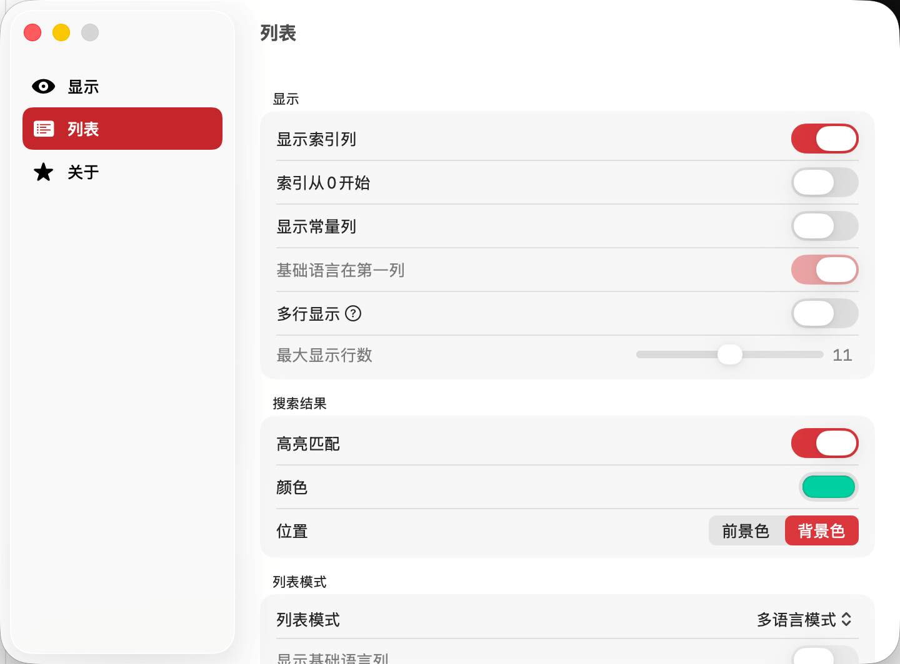

列表设置用于配置主窗口内容区域的显示样式，提供灵活的视图选项以满足不同翻译工作流程的需求。合理配置列表显示可以显著提高翻译效率和阅读体验。
控制是否在列表中显示索引列。索引列显示每个翻译条目的序号，帮助您：
默认值: 启用
建议:
对于大型项目，建议启用索引列以便更好地管理和定位条目。
设置索引列的起始编号方式：
默认值: 从 1 开始
适用场景:
对于支持常量的strings文件，控制是否显示常量列。
常量列显示每个翻译条目的唯一标识符，便于：
建议: 对于 iOS/macOS 开发项目，建议启用此选项。
将基础语言（Base Language）固定在列表的最左侧第一列位置。
优势:
默认值: 启用
建议: 强烈推荐启用，特别是在多语言并行翻译场景下。
控制列表单元格的文本显示方式：
权衡考虑:
默认值: 单行模式
适用场景:
在多行显示模式下，限制单个单元格的最大显示行数。
默认值: 3 行
说明: 此设置可防止单个超长文本（如包含数百或数千字符的法律条款、说明文档）占据过多垂直空间，导致其他条目无法查看。超出最大行数的内容将被截断并显示省略号。
推荐配置:
在执行搜索操作时，是否高亮显示匹配到的关键词部分。
功能优势:
默认值: 启用
建议:
始终启用，特别是在使用模糊搜索或正则表达式搜索时。
自定义搜索结果中匹配关键词的高亮颜色。
默认值: 系统强调色（通常为蓝色或系统主题色）
建议:
选择与背景对比度高的颜色，确保在不同主题（浅色/深色模式）下都清晰可见。
设置高亮颜色应用的位置：
默认值: 背景色
推荐:
使用背景色高亮通常效果更好，因为可以保持文本颜色的一致性。
TransX 支持两种列表显示模式，以适应不同的翻译工作流程：
在列表中同时显示所有语言列，实现多语言并行对比。
适用场景:
优势: 全局视图，方便跨语言对比
劣势: 语言较多时需要频繁水平滚动
只显示选定的单个目标语言列，提供更聚焦的翻译视图。
适用场景:
优势: 界面简洁，无需水平滚动，更大的编辑区域
配合: 可结合「显示基础语言列」选项保留原文参考
在单语言模式下，是否同时显示基础语言列作为翻译参考。
功能说明: 启用此选项后，界面将显示两列：基础语言 + 当前选择的目标语言。
默认值: 启用
建议: 强烈建议启用，确保翻译时始终有原文参考。
在单语言模式下，是否显示语言切换面板，用于快速切换查看的目标语言。
面板功能:
默认值: 启用
建议:
如果需要频繁切换语言，建议启用；如果只翻译固定语言，可关闭以节省屏幕空间。
精确控制列表中各列的宽度范围，以优化屏幕空间利用。
配置选项:
调整方式:
最佳实践:
提示: 列宽设置会自动保存，下次打开项目时恢复。